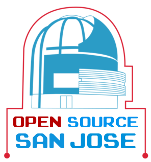
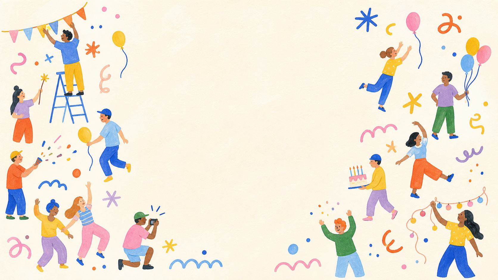
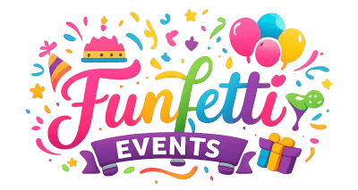

I’m a designer based in the Bay Area, open to junior design roles and internships.
I love all things art, movies, music, NewJeans, and TLOU 2.
You can reach me on LinkedIn or at jasontello2003@gmail.com.



The challenge
The approach
The result
Key details
Resume